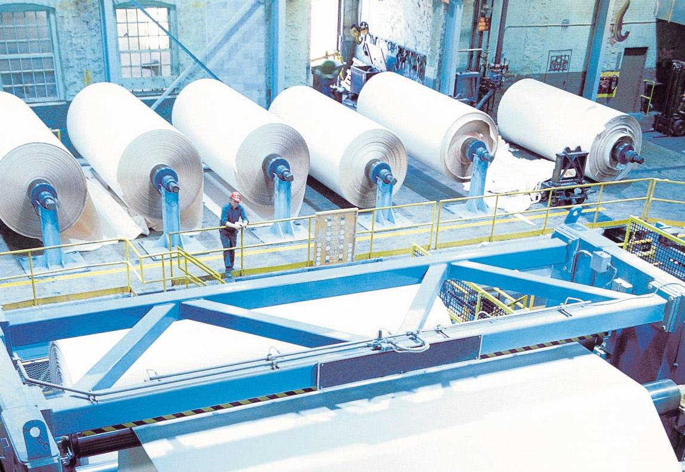

Procesul tehnologic începe cu proiectarea produsului, urmată de selectarea materialelor potrivite. Se utilizează tehnologii moderne pentru a asigura eficiență și calitate.
Etapele principale sunt: - proiectare - tăiere materiale - asamblare - verificare finală

Fiecare etapă este monitorizată pentru a evita pierderile și pentru a reduce impactul asupra mediului. Se folosesc metode eficiente energetic și procese automatizate.
Înapoi